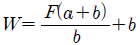
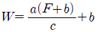
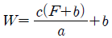
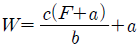

방사선비파괴검사기사 (2017-09-23 기출문제)
1과목: 비파괴검사 개론
1. 자분탐상검사에서 결함에 의한 누설자속에 대한 설명 중 옳은 것은?
- 강자성체에 발생하는 자속은 자계의 세기와 함께 감소한다.
- 자분탐상검사에서 시험체에 자계를 주어 자속을 발생시킨 경우, 자력선이 결함에 가능한 한 많이 차단되지 않는 방향의 자계를 이용할 필요가 있다.
- 강자성체 중에 자속이 포화되어 그 이상 자속이 흐르지 않는 상태를 최대자속의 상태라 부르고, 이 때 단위단면적당의 자속량을 자속밀도라 부른다.
- 시험체 표면에 요철이 있는 경우, 포화자속밀도에 도달하면 요철부에도 누설자속이 많이 형성되어 자분을 집적하고 결함자분모양의 식별이 곤란해진다.
(정답률: 52%)

2. 강용접부(20mm 두께)내 융합부족이나 균열을 가장 잘 검출할 수 있는 비파괴검사법은?
- 침투탐상검사
- 초음파탐상검사
- 자분탐상검사
- 누설검사
(정답률: 66%)
3. 1.0atm에 대한 기압 단위의 환산이 틀린 것은?
- 7.6torr
- 14.7psi
- 101.3kPa
- 760mmHg
(정답률: 34%)
4. 다음 중 비파괴검사에 대한 설명으로 잘못된 것은?
- 비파괴검사는 모든 종류의 결함을 검출할 수 있다.
- 비파괴검사는 시험체를 파괴시키지 않고 원형을 보존하며 검사하는 방법을 말한다.
- 비파괴검사는 재료의 물리적 성질이 결함의 존재에 의하여 변화하는 현상을 이용한다.
- 비파괴검사는 제품의 사용 수명 내의 영향을 미치는 결함을 검출하고 제거함으로써 제품의 신뢰도를 높일 수 있다.
(정답률: 77%)
5. 시험체가 변형될 때 그 시험체의 표면에 부착시켜 놓은 센서의 전기적인 변화를 측정함으로써 변형에 대한 모니터링이 가능한 특수 비파괴검사법은?
- 전위차시험
- 스트레인측정시험
- 전자초음파공명시험
- 기체 방사성동위원소시험
(정답률: 54%)
6. 실루민을 개량처리하는 이유로 옳은 것은?
- 공정부근의 주조조직으로 나타나는 SI를 미세화 시키기 위해
- 공석부근의 주조조직으로 나타나는 Al를 미세화 시키기 위해
- 공정부근의 주조조직으로 나타나는 Zn를 미세화 시키기 위해
- 공정부근의 주조조직으로 나타나는 Sn를 미세화 시키기 위해
(정답률: 80%)
7. 금속초미립자의 특성에 대한 설명으로 옳은 것은?
- 융정이 금속덩어리보다 높다.
- 활성이 약하여 화학반응을 일으키지 않는다.
- Fe합계 합금 초미립자는 금속덩어리보다 자성이 약하다.
- 저온에서 열저항이 매우 작아 열의 양도체이다.
(정답률: 35%)
8. Mg 합금이 구조재료로써 갖는 특성에 관한 설명으로 틀린 것은?
- 소성가공성이 높아 상온변형이 쉽다.
- 비강도가 커서 항공우주용 재료에 유리하다.
- 감쇠능이 주철보다 커서 소음방지 재료로 우수하다.
- 기계가공성이 좋고 아름다운 절삭면이 얻어진다.
(정답률: 56%)
9. 로크웰 경도시험에서 원뿔형 다이아몬드콘 압입체의 꼭지각 각도는 얼마인가?
- 60도
- 120도
- 136도
- 145도
(정답률: 48%)
10. Al에 약 10%까지의 Mg을 품는 합금으로 강도, 연신성, 내식성을 목적으로 사용하는 것은?
- 라우탈(Lautal)
- 와이 합금(Y - alloy)
- 하이드로 날륨(Hydronalium)
- 로엑스 합금(Lo - Ex alloy)
(정답률: 31%)
11. 현미경조직을 관찰하기 위해 철강의 조직을 부식하는 데 가장 적합한 부식액은?
- 왕수
- 나이탈 용액
- 염화제2철 용역
- 수산화나트륨 용액
(정답률: 42%)
12. 구리를 진공 용해하여 0.001~0.002% O2함량을 가지며 유리의 봉착성이 좋아 진공관용 재료 및 전자기기 등에 이용되는 재료는?
- 무산소동
- 탈산동
- 전기동
- 정련동
(정답률: 49%)
13. Sn-Sb-Cu계 합금으로 주석계 화이트 메탈의 명칭은?
- 다우메탈
- 배빗메탈
- 바이메탈
- 플래티나이트
(정답률: 50%)
14. 강에서 마텐자이트조직이 경도가 큰 이유가 아닌 것은?
- 결정의 미세화
- 급냉으로 인한 내부 응력
- 탄소원자에 의한 Fe 격자의 강화
- 확산변태에 의한 시멘타이트의 분리
(정답률: 50%)
15. 바이트, 다이스 등에 사용되는 합금 공구강 강재의 한국산업표준 기호로 옳은 것은?
- STS
- STB
- SCM
- STR
(정답률: 48%)
16. 용접법을 3가지로 대분류할 때 포함되지 않는 것은?
- 리벳
- 압접
- 납땜
- 용접
(정답률: 64%)
17. 가스텅스텐아크용접(TIG용접)에 관한 설명으로 옳은 것은?
- 직류정극정의 경우 비드 폭이 넓고 용입이 얇다.
- 직류역극성의 경우 비드 폭이 좁고 용입이 깊다.
- 직류역극성으로 용접 시 산화 피막을 제거하는 청정 작용이 있다.
- 고주파 교류를 사용하면 청정 효과를 얻을 수 없어 알루미늄 용접에 부적당하다.
(정답률: 38%)
18. 강의 용착 금속 결함 중 은점(Fish eye) 발생의 가장 큰 원인이 되는 가스는?
- 질소
- 수소
- 헬륨
- 이산화탄소
(정답률: 63%)
19. 연강용 가스 용접봉의 성분 중 유황(S)이 모재에 미치는 영향으로 올바른 것은?
- 강에 취성을 주며 가연성을 잃게 한다.
- 기공을 막을 수 있으나 강도가 떨어진다.
- 강의 강도를 증가시키거나 연신율, 굽힘성 등이 감소된다.
- 용접부의 저항력을 감소시키고 기공 발생의 원인이 된다.
(정답률: 22%)
20. 용접부 검사방법 중 파괴검사에 속하는 것은?
- 와류 검사
- 초음파 검사
- 방사선 투과 검사
- 현미경 조직 검사
(정답률: 67%)
2과목: 방사선투과검사 원리
21. X선 회절법에서 Laue법의 특성에 대한 설명으로 옳은 것은?
- 필름에 하얀 점으로 나타난다.
- 모든 X선이 특정한 방향으로 회절한다.
- 특성스펙트럼으로부터 얻은 X선빔이 결정시편을 통해 진행한다.
- 1차 방사선빔은 산란선이 필름을 fogging하는 것을 방지하기 위해 놓은 납차폐체에 흡수된다.
(정답률: 60%)
22. 방사선투과검사에서 감쇠의 정도를 나타내는 흡수계수(μ)에 대한 설명으로 틀린 것은?
- 방사선의 에너지가 낮을수록 커진다.
- 시험체의 두께가 감소할수록 커진다.
- 투과물질의 원자번호가 클수록 커진다.
- 투과물질의 밀도가 클수록 커진다.
(정답률: 54%)
23. 방사선투과검사에서 산란선 방지효과가 가장 작은 것은?
- 필름홀더에 연박스크린을 넣었다.
- 필름 뒷면에 얇은 합판을 부착했다.
- 방사구에 다이아프램을 설치하였다.
- 시험체 주위에 마스크를 설치하였다.
(정답률: 76%)
24. X선관의 표적물질을 텅스텐으로 사용할 때의 효과는?
- 열을 빨리 외부로 전달한다.
- 열에너지를 운동에너지로 변환시킨다.
- X선 발생효율을 높인다.
- 음극선을 많이 산란시킨다.
(정답률: 78%)
25. 콤프턴효과가 일어나기 전과 후에 X선의 광량자와 전자사이에 성립하는 법칙으로 옳은 것은?
- 쿨롱의 법칙과 플래밍의 법칙
- 에너지보존법칙과 운동량보존법칙
- 운동량보존의 법칙과 쿨롱의 법칙
- 쿨롱의 법칙과 에너지보존법칙
(정답률: 62%)
26. 상호법칙에서 광화학반응의 결과는 방사선의 강도와 노출시간의 곱으로 표현된다. 다음 중 상호법칙에 적용되지 않는 것은?
- X선과 납스크린의 조합
- γ선과 납스크린의 조합
- X선과 스크린을 사용하지 않는 조합
- X선과 형광스크린의 조합
(정답률: 42%)
27. CO-60 방사성 원소의 붕괴 형식에 대한 설명으로 옳은 것은?
- 전자포획, 감마붕괴
- 베타붕괴, 감마붕괴
- 알파붕괴, 감마붕괴
- 알파붕괴, 베타붕괴
(정답률: 48%)
28. X선이 회절현상을 일으키는 데 필요한 X 선의 파장(λ), X선의 입사각(θ), 결정격자 간격(d) 사이의 관계를 나타내는 식 nλ=2dsinθ을 무엇이라고 하는가? (단, n은 정수이다.)
- 임계조건식
- 모아응력 조건식
- 브래그 조건식
- 가이거-뮬러 조건식
(정답률: 52%)
29. 방사선투과검사에서 사용되는 Se-75에 대한 설명으로 옳은 것은?
- 반감기가 75일이다.
- 원자로 조사로 방사화하는 경우 선원을 작게 만드는 것이 용이하다.
- 딱딱하고 회색인 자성금속으로 용융점이 1480℃ 이다.
- 평균에너지는 260keV이다.
(정답률: 45%)
30. 방사선투과검사에서 M1ㆍT1=M2ㆍT2의 관계로부터 노출시간의 감소는 전류가 증가 하므로 보상된다. M1ㆍT1=M2ㆍT2=C 라 할 때 이를 무슨 법칙이라 하는가? (단, M1, M2는 전류, T1, T2는 노출시간 C는 상수이다.)
- 상호법칙
- 거리의 역제곱 법칙
- 흡수지수법칙
- 에너지보전법칙
(정답률: 49%)
31. 물리적 반감기에 대한 설명으로 옳은 것은?
- 방사성 동위원소의 방사능이 절반으로 붕괴하는 데 소요되는 시간
- 방사성물질의 절반이 물질을 통과하기 위해 소요되는 시간
- 방사성물질의 절반이 인체 내에서 없어지는데 소요되는 시간
- 방사성 동위원소의 방사능의 농도가 절반으로 줄어드는 데 소요되는 시간
(정답률: 77%)
32. γ선의 입자 광자수 4000개가 좁은 평행선 속으로 1.5cm 두께의 구리판을 투과한 후 2000개의 광자수로 감소하였다면 이 물질의 선흡수계수는(cm-1)는?
- 0.24
- 0.46
- 0.73
- 0.95
(정답률: 35%)
33. 피사체 콘트라스트에 관한 설명으로 틀린 것은?
- 에너지가 낮으면 콘트라스트는 높다.
- 산란선이 많으면 콘트라스트는 낮다.
- 검사체의 두께차가 크면 콘트라스트가 높다.
- 필름의 현상이 과도하면 콘트라스트는 낮다.
(정답률: 36%)
34. 방사성 동위원소 중 일부만 방사선투과검사용 선원으로 이용되고 있는 이유로 틀린 것은?
- 고가의 가격
- 부적절한 방사선 강도
- 매우 긴 반감기
- 제조의 어려움
(정답률: 50%)
35. 전자쌍생성을 위하여 음전자와 양전자의 정지질량의 합에 해당하는 에너지는 얼마 이상이어야 하는가?
- 0.511keV
- 1.02keV
- 0.511MeV
- 1.02MeV
(정답률: 61%)
36. 방사선 검출기의 종류 중 기체의 전리작용을 이용한 검출기가 아닌 것은?
- 전리함
- 비례계수관
- GM 계수관
- 반도체 검출기
(정답률: 54%)
37. 감마선의 등가계수에 관한 설명으로 틀린 것은?
- 기본적으로 X선에 대해 관련된 동일한 사항이 감마선 흡수에도 적용된다.
- 단일에너지 방사성동위원소라도 선원은 시편의 크기, 모양 및 조성에 영향을 받는다.
- 원자번호가 아주 큰 차가 있는 두 재질에 대한 흡수는 그 밀도에 비례관계가 성립되지 않는다.
- Ir-192와 같이 넓은 에너지 분포를 갖고 방출하는 경우에는 X선과 아주 상이하다.
(정답률: 40%)
38. 방사선투과검사에서 명료도에 영향을 미치는 기하학적 요인으로 옳은 것은?
- 필름의 종류
- 초점크기
- 스크린의 종류
- 방사선의 선질
(정답률: 52%)
39. 다음 중 방사성 동위원소에서 방출되는 γ선 에너지의 값이 옳은 것은?
- Cs-137 : 약 60MeV
- Co-60 : 약 1.33MeV
- Tm-170 : 약 10.5MeV
- Ir-194 : 약 0.⑤MeV
(정답률: 56%)
40. X선 발생의 조건으로 틀린 것은?
- 양극에서 증기압이 높아야 한다.
- 음극에서 유리전자가 방출되어야 한다.
- 방출된 전자는 높은 운동에너지를 가지도록 가속한다.
- 고속으로 가속된 전자를 저지하는 물질이 존재한다.
(정답률: 50%)
3과목: 방사선투과검사 시험
41. 방사선 투과사진에서 결함 또는 투과도계의 식별한계를 확인할 수 있는 방법은?
- 필름 특성곡선
- 기하학적 보정계수
- 필름 콘트라스트
- 식별한계 콘트라스트
(정답률: 62%)
42. 방사선투과검사로 검출하기 가장 어려운 결함은?
- 기공
- 슬래그개재
- 라미네이션
- 용입불량
(정답률: 79%)
43. Co-60 선원 5Ci로 촬영 시 선원과 피사체와의 거리가 1m일 때 양질의 사진을 얻었다면 작업능률을 올리기 위해서 노출 시간을 1/2로 줄이면 거리는 얼마로 하여야 되는가? (단, Co-60의 RHM은 1.32R/h이다.)
- 25cm
- 50cm
- 75cm
- 100cm
(정답률: 46%)
44. 방사선을 방출하는 핵연료 봉의 내부상태를 확인하기 위하여 방사성 동위원소를 사용하는 조사 장치를 선택할 때 가장 효과적으로 시험할수 있는 방사선원으로 적당한 것은?
- Ir-192
- Th-170
- Cs-137
- Cf-252
(정답률: 45%)
45. 방사선투과사진의 관찰방법에 관한 설명으로 옳은 것은?
- 고농도의 투과사진을 관찰하는 경우 실내의 밝기 및 고정 마스크의 영향이 커지게 되므로 투과사진의 겉보기 콘트라스트를 크게하기 위해서는 투과광 이외의 강도를 가능한한 크게 한다.
- 저농도 범위에서는 식별한계 콘트라스트가 거의 일정하지만 고농도 범위에서는 농도가 상승함에 따라 콘트라스트가 증가한다
- 밝기가 다른 두 관찰기에 대한 투과도계의 선의 식별결과는 저농도 범위에서는 큰 차이를 나타내고, 고농도 범위에서는 큰 차이를 나타내지 않는다.
- 밝은 실내에서 관찰하는 경우, 선경 d인 투과도계 선의 관찰 가능한 농도범위는 암실에 비해 커지고, 투과사진을 관찰하는 경우 투과광 이외의 빛이 관찰자의 눈에 들어오지 않도록 주의한다.
(정답률: 48%)
46. 단층촬영에 대한 설명으로 틀린 것은?
- 방사선원 이외에도 초음파 전자 양성자 레이저 등을 사용한다.
- X관의 이동각이 시험체의 촬영단층의 두께를 좌우한다.
- 시험체의 얇은 단면을 나타내기 때문에 영상의 형태는 2차원적으로 얻는다.
- 이동각이 클수록 단층두께는 얇아져서 선명도가 떨어진다.
(정답률: 50%)
47. 방사선투과검사에서 촬영된 필름을 현상할 때 일반적으로 현상시간을 증가시키면 특성곡선은 어떻게 변하는가? (단, 현상온도는 20℃ 로 일정하다.)
- 기울기가 커지고 왼쪽으로 이동한다.
- 기울기가 커지고 오른쪽으로 이동한다.
- 기울기가 작아지고 왼쪽으로 이동한다.
- 기울기가 작아지고 오른쪽으로 이동한다.
(정답률: 61%)
48. 방사선투과검사 시 사용하는 방사성 동위원소의 붕괴형태가 아닌 것은?
- 전화포획
- 하전입자의 충돌
- 감마선 방출
- 베타입자 방출
(정답률: 52%)
49. 다음 중 X선 회절장치의 사용에 대한 설명으로 틀린 것은?
- 시험체의 결정구조를 확인한다.
- 시험체의 용접 결함을 검출한다.
- 시험체의 화합물 종류를 확인한다.
- 필름은 보통 일면코팅필름을 사용한다.
(정답률: 50%)
50. 방사선투과검사에 사용되는 동위원소의 비방사능에 대한 설명으로 옳은 것은?
- 비방사능이 높게 되면 명료한 투과사진을 얻을 수 있다.
- 방사선투과검사에 사용하는 감마선원은 비방사능이 낮을수록 좋다.
- 비방사능의 단위는 Ci이다.
- 비방사능이 높게 되면 자기흡수가 증가된다.
(정답률: 39%)
51. 방사선투과검사에서 사용하는 형광스크린에 대한 설명으로 틀린 것은?
- 경금속에 대한 방사선 투과검사의 경우에 일반적으로 사용된다.
- 노출시간을 감소시키는 데 좋은 효과가 있다.
- 방사선 투과사진에 스크린 반점을 만든다.
- 연박스크린을 사용한 투과사진보다 선명도가 떨어진다.
(정답률: 22%)
52. 방사선투과사진 감도에서 시험체 명암도에 영향을 주는 인자가 아닌 것은?
- 시험체의 두께차
- 방사선의 에너지
- 산란방사선
- SFD(선원-필름간의거리)
(정답률: 37%)
53. 엑스선 발생장치의 엑스선관의 집속컵에 대한 설명으로 틀린 것은?
- 필라멘트를 둘러싸고 있는 것으로 순철과 니켈을 사용한다.
- 빔을 집속시킨다.
- 큰 초점보다 작은 초점의 엑스선은 집속컵의 단면적이 작게 된다.
- 열을 빨리 전달하여야하기에 열전도도가 낮아야한다.
(정답률: 72%)
54. 선원 필름간 거리 30cm에서 3인치 파이프 용접부를 이중벽 이중상법으로 감마선투과 촬영 결과 3mm직경의 기공이 선원측의 용접부위에 나타났다. 실제 기공의 직경은 약 얼마인가? (단, 파이프와 필름은 완전 밀착한다.)
- 2.2mm
- 4.1mm
- 5.6mm
- 6.8mm
(정답률: 40%)
55. 감마선 조사장치를 사용할 때 시험체 방향으로 방사선 조사범위를 제한하기 위해 가이드 튜브 끝에 설치하는 안전장비는?
- 피그테일
- 콜리메타
- 집속컵
- 후드
(정답률: 71%)
56. 중성자 투과검사에서 에너지에 따른 중성자의 분류가 아닌것은?
- 광전중성자
- 냉중성자
- 속중성자
- 열중성자
(정답률: 47%)
57. 방사선투과검사에 대한 설명으로 옳은 것은?
- 위치마크는 X선 필름의 감도측정에 주로 사용된다.
- 두께 15mm인 강재 용접부의 투과시험에 가장 적당한 동위원소는 Co-60이다.
- 투과도계의 용도는 투과사진의 상질 판정이라고 할 수 있다.
- 필름 수세 탱크의 물은 시간당 탱크 용량의 1/3씩 교체되어야 한다.
(정답률: 61%)
58. 방사선투과검사 시 필름특성곡선에서 알 수 있는 것은?
- 필름 콘트라스트
- 시험체 콘트라스트
- 방사선 에너지
- 시험체 두께
(정답률: 63%)
59. Ir-192의 에너지가 0.48MeV이고, 이때 철의 선흡수계수가 0.0462[MM]라면, Ir-192에 대한 철의 반가층은 몇 mm인가?
- 7mm
- 15mm
- 32mm
- 67mm
(정답률: 65%)
60. 방사선투과검사에 사용되는 필름의 구성요소가 아닌 것은?
- 보호막
- 감광유제
- 접착제
- 흡수제
(정답률: 35%)
4과목: 방사선투과검사 규격
61. 원자력안전법 시행규칙에서 규정한 사용신고대상 방사선발생장치의 용량은 얼마인가?
- 가속관의 최대전압 150kV 이하
- 가속관의 최대전압 170kV 이하
- 가속관의 최대전압 190kV 이하
- 가속관의 최대전압 200kV 이하
(정답률: 43%)
62. 원자력안전법에서 정하는 방사선의 운반종사자에 대한 연간 유효선량한도는? (문제 오류로 실제 시험에서는 모두 정답처리 되었습니다. 여기서는 1번을 누르면 정답 처리 됩니다.)
- 1밀리시버트
- 12밀리시버트
- 50밀리시버트
- 100밀리시버트
(정답률: 66%)
63. Ir-192 20Ci가 149일이 지나면 activity는 약 얼마인가?
- 1.85x1010Bq
- 1.85x1011Bq
- 3.7x1012Bq
- 3.7x1013Bq
(정답률: 45%)
64. 방사선작업 경험이 없는 일반인 30세 남자의 경우 연간 유효선량한도는?
- 50mSv
- 300mSv
- 15mSv
- 1mSv
(정답률: 63%)
65. 보일러 및 압력용기에 대한 방사선투과검사(ASME Sec.V Art2)에서 조건을 만족하는 필름과 밀착된 피시험체의 두께는? (단, 선원-시험체 표면간 거리= 40인치 선원크기= 0.5인치, 기하학적 불선명도(Ug)=0.019인치 이다.)
- 1.1인치
- 1.3인치
- 1.5인치
- 1.7인치
(정답률: 46%)
66. 감마선이나 엑스선의 차폐 시 고려되어야 할 사항이 아닌것은?
- 차폐 재질의 종류
- 차폐 재질의 두께
- 차폐 재질의 밀도
- 차폐 재질의 강도
(정답률: 62%)
67. 보일러 및 압력용기에 대한 방사선투과검사(ASME Sec. V Art.2)에 따라 선형투과도계를 사용할 때 이 투과도계 내에는 몇 개의 바늘로 구성되어 있는가?
- 4
- 5
- 6
- 7
(정답률: 52%)
68. 다음 중 방사선에 대한 반가층의 두께가 가장 얇은 차폐재는?
- 알루미늄
- 철
- 납
- 콘크리트
(정답률: 65%)
69. 섬광검출기는 어느 현상을 이용하여 방사선을 측정하는가?
- 방사선이 물질 내를 통과할 때 발생하는 열
- 방사선의 감광작용
- 방사선에 의한 화학작용
- 방사선이 물질과 상호 작용하여 발생하는 빛
(정답률: 52%)
70. α선을 방출하는 방사선물질에 대하여 원자력안전법에서 허용하는 최대 표면오염도는 얼마인가?
- 0.04 kBq/m2
- 0.4kBq/m2
- 4kBq/m2
- 40kBq/m2
(정답률: 36%)
71. 강용접 이음부의 방사선투과 시험방법(KS B 0845)에 따라 모재두께가 30mm인 강용접부를 판독할 때 길이 9mm인 제2종 흠은 몇류로 분류하는가?
- 1류
- 2류
- 3류
- 4류
(정답률: 39%)
72. 강용접 이음부의 방사선 투과시험방법(KS B 0845)에서 강판 맞대기 용접부의 모재 두께가 11mm이고, A급 상질을 요구하는 계조계의 값(농도차/농도)은 얼마인가?
- 0.15
- 0.062
- 0.046
- 0.035
(정답률: 26%)
73. 주강품의 방사선 투과시험방법(KS D 0227)에서 항상 6류로 분류되는 결함은?
- 수축관
- 갈라짐
- 개재물
- 모래물림
(정답률: 50%)
74. 원자력안전법 시행규칙에 의해 방사선량을 측정하여야 하는 장소에 해당되지 않는 것은?
- 배수구
- 사용시설
- 저장시설
- 방사선관리구역
(정답률: 63%)
75. 알루미늄의 T형 용접부 방사선투과시험방법(KS D 0245)에 따라 시험할 때 재료 두께가 20mm 미만인 곳을 검사하려면 계조계의 어느 형이 가장 적당한가?
- S형
- B형
- C형
- D형
(정답률: 42%)
76. 강용접 이음부의 방사선투과 시험방법(KS B 0845)에 따라 시험 시 계조계의 관의 바깥지름이 얼마 이상인 경우 사용되는가?
- 100mm
- 50mm
- 40mm
- 20mm
(정답률: 45%)
77. 보일러 및 압력용기에 대한 방사선투과검사(ASME Sec.V Art2)의 이동방사선투과시험(In-Motion Radiography)에서 방사선 빔의 폭을 결정하는 식은? (단, W는 이동방향에서 측정된 시험체의 표면에서의 빔 폭 A는 다이아프램 slit의 이동방향으로의 폭, b 는 선원으로부터 다이아프램의 시험체쪽 표면까지의 거리, C는 다이아프램의 시험체쪽 표면으로부터 시험체까지의 거리, F는 선원의 크기이다.)




(정답률: 32%)
78. Ir-192 선원으로 방사선투과시험 시 방사선 안전관리에 필요한 장비로만 조합된 것은?
- 도시미터, 도시미터 충전기, 납글자
- 도시미터, 경고판, 투과도계
- 서베이미터, 도시미터, 필름배지
- 소화기, 납글자, 도시미터
(정답률: 75%)
79. 보일러 및 압력용기에 대한 방사선투과검사(ASME Sec.V, Art.2)의 투과도계 1T,2T,4T에서 T의 의미는?
- 시험편의 두께
- 투과도계의 두께
- 노출 두께
- 시험시야의 두께
(정답률: 55%)
80. 보일러 및 압력용기에 대한 방사선투과검사(ASME Sec.V, Art.2) 에 의거 내부 선원법에 의하여 전 원주 용접부를 동시에 촬영할 때 요구되는 최소 투과도계의 개수는?
- 각 필름당 1개
- 2개
- 3개
- 4개
(정답률: 44%)